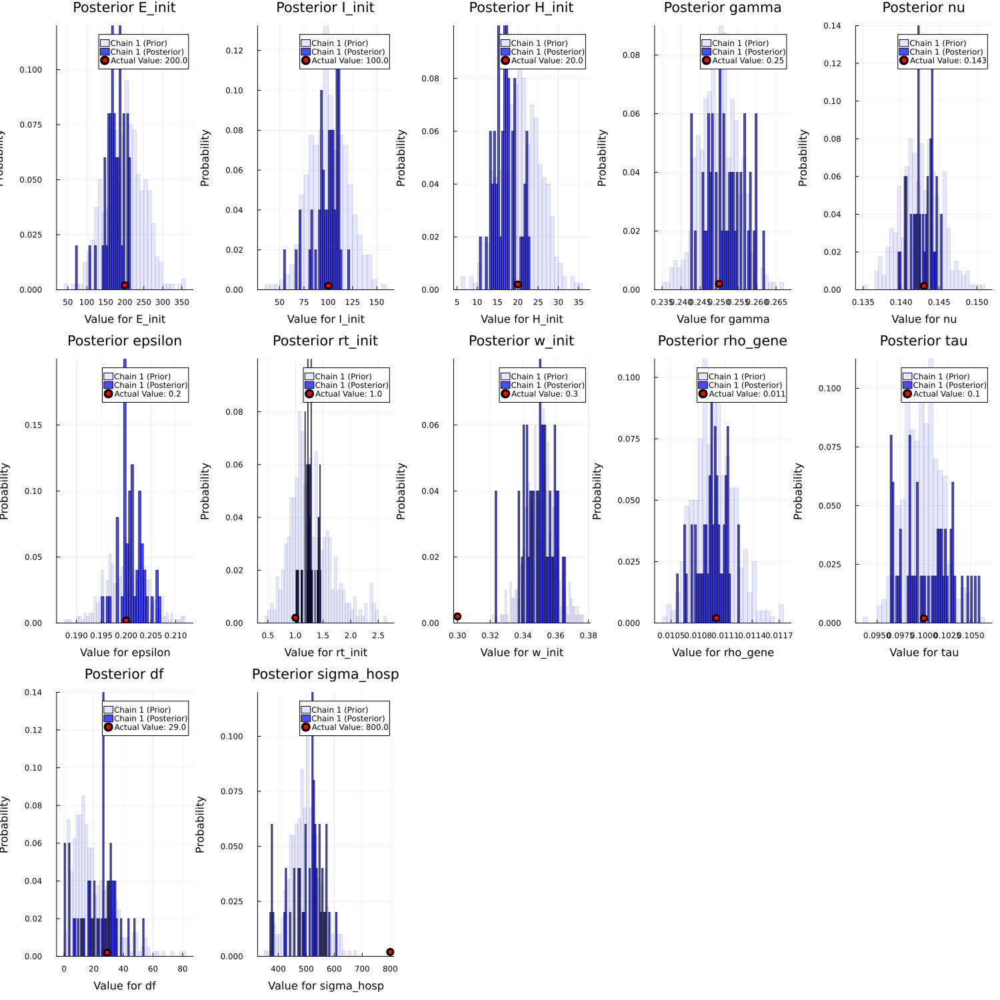
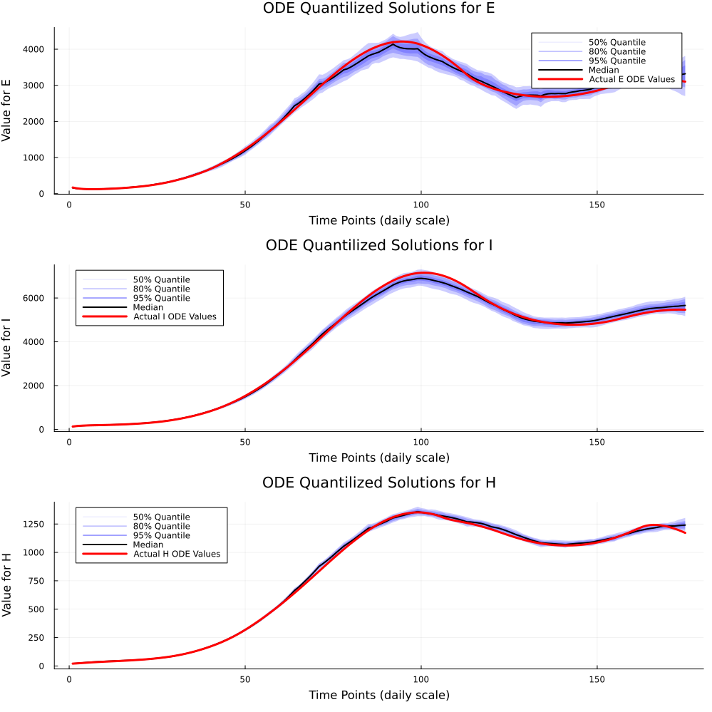
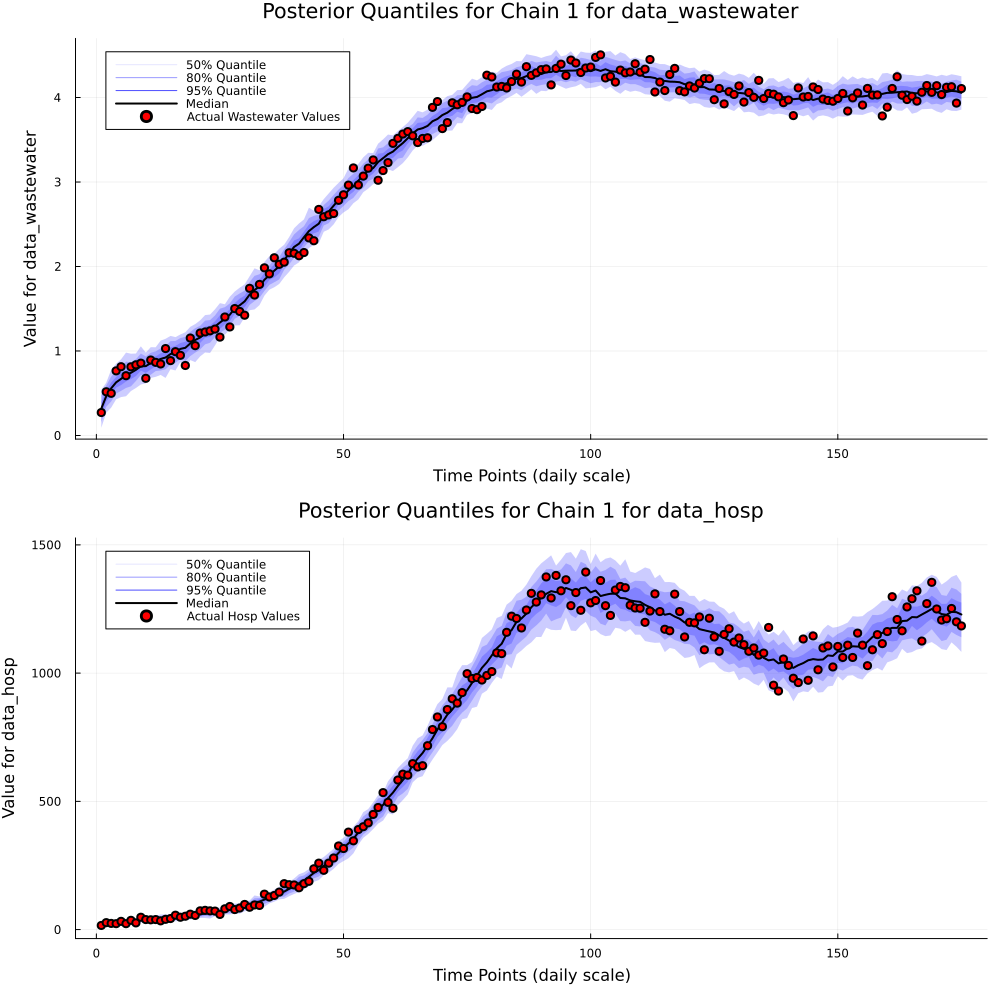

Generating Posterior Distribution Samples with UCIWWEIHR ODE Compartmental Based Model without Forecasting.
This package has a way to sample from a posterior or prior that is defined in the future paper using the uciwweihr_fit.jl and uciwweihr_model.jl. We can then generate desired quantities and forecast for a given time period with the posterior predictive distribution, using uciwweihr_gq_pp.jl. We first generate data using the generate_simulation_data_uciwweihr function which is a non-mispecified version of the model, we will also be using prespecified effective reporduction curves and prespecified hospitalization probability curves.
1. Data Generation.
using UCIWWEIHR
# Running simulation function with presets
rt_custom = vcat(
range(1, stop=1.8, length=7*4),
fill(1.8, 7*2),
range(1.8, stop=1, length=7*8),
range(0.98, stop=0.8, length=7*2),
range(0.8, stop=1.1, length=7*6),
range(1.1, stop=0.97, length=7*3)
)
w_custom = vcat(
range(0.3, stop=0.38, length=7*5),
fill(0.38, 7*2),
range(0.38, stop=0.25, length=7*8),
range(0.25, stop=0.28, length=7*2),
range(0.28, stop=0.34, length=7*6),
range(0.34, stop=0.28, length=7*2)
)
params = create_uciwweihr_sim_params(
time_points = length(rt_custom),
Rt = rt_custom,
w = w_custom
)
df = generate_simulation_data_uciwweihr(params)
first(df, 5)| Row | obstimes | log_ww_conc | hosp | rt | wt | E_ode_comp_sol | I_ode_comp_sol | H_ode_comp_sol |
|---|---|---|---|---|---|---|---|---|
| Int64 | Float64 | Int64 | Float64 | Float64 | Float64 | Float64 | Float64 | |
| 1 | 1 | 0.347026 | 18 | 1.0 | 0.3 | 170.466 | 129.534 | 20.8891 |
| 2 | 2 | 0.550405 | 26 | 1.02963 | 0.302353 | 150.527 | 149.473 | 22.5594 |
| 3 | 3 | 0.503247 | 29 | 1.05926 | 0.304706 | 137.656 | 163.007 | 24.6122 |
| 4 | 4 | 0.885447 | 36 | 1.08889 | 0.307059 | 129.721 | 172.364 | 26.7834 |
| 5 | 5 | 0.794372 | 28 | 1.11852 | 0.309412 | 125.254 | 179.064 | 28.9256 |
2. Sampling from the Posterior Distribution and Posterior Predictive Distribution.
Here we sample from the posterior distribution using the uciwweihr_fit.jl function. First, we setup some presets, where we need to use create_uciwweihr_model_params() to get default parameters for the model. Then we have an array where index 1 contains the posterior/prior predictive samples, index 2 contains the posterior/prior generated quantities samples, and index 3 contains the original sampled parameters for the model. Again, we can allow misalignment of hospital and wastewater data's observed times. For this tutorial, we use the same observed points.
data_hosp = df.hosp
data_wastewater = df.log_ww_conc
obstimes_hosp = df.obstimes
obstimes_wastewater = df.obstimes
max_obstime = max(length(obstimes_hosp), length(obstimes_wastewater))
param_change_times = 1:7:max_obstime # Change every week
priors_only = false
n_samples = 200
forecast = false
forecast_weeks = 0
model_params = create_uciwweihr_model_params()
samples = uciwweihr_fit(
data_hosp,
data_wastewater,
obstimes_hosp,
obstimes_wastewater;
param_change_times,
priors_only,
n_samples,
params = model_params
)
model_output = uciwweihr_gq_pp(
samples,
data_hosp,
data_wastewater,
obstimes_hosp,
obstimes_wastewater;
param_change_times = param_change_times,
params = model_params
)
first(model_output[1][:,1:5], 5)| Row | iteration | chain | data_wastewater[1] | data_wastewater[2] | data_wastewater[3] |
|---|---|---|---|---|---|
| Int64 | Int64 | Float64 | Float64 | Float64 | |
| 1 | 1 | 1 | -5.88457 | -4.52526 | -4.67912 |
| 2 | 2 | 1 | -3.97767 | -2.93557 | -5.15397 |
| 3 | 3 | 1 | -4.568 | -4.87559 | -6.69856 |
| 4 | 4 | 1 | -3.94258 | -4.89425 | -4.32394 |
| 5 | 5 | 1 | -3.87532 | -4.61234 | -4.89718 |
first(model_output[2][:,1:5], 5)| Row | iteration | chain | E_init | I_init | H_init |
|---|---|---|---|---|---|
| Int64 | Int64 | Float64 | Float64 | Float64 | |
| 1 | 1 | 1 | 1.2094e-6 | 1.90293e-12 | 0.292037 |
| 2 | 2 | 1 | 4.53971e-6 | 6.16018e-13 | 0.315978 |
| 3 | 3 | 1 | 5.04578e-7 | 8.13763e-13 | 0.282348 |
| 4 | 4 | 1 | 1.19566e-7 | 4.30541e-13 | 0.23643 |
| 5 | 5 | 1 | 6.30762e-9 | 2.71691e-11 | 0.684671 |
first(model_output[3][:,1:5], 5)| Row | iteration | chain | E_init_non_centered | I_init_non_centered | H_init_non_centered |
|---|---|---|---|---|---|
| Int64 | Int64 | Float64 | Float64 | Float64 | |
| 1 | 101 | 1 | -0.378474 | -1.57964 | -0.845321 |
| 2 | 102 | 1 | -0.352019 | -1.63603 | -0.829563 |
| 3 | 103 | 1 | -0.395957 | -1.62211 | -0.85207 |
| 4 | 104 | 1 | -0.424754 | -1.65395 | -0.887567 |
| 5 | 105 | 1 | -0.483596 | -1.44671 | -0.67491 |
3. MCMC Diagnostic Plots/Results Along with Posterior Predictive Distribution.
We also provide a very basic way to visualize some MCMC diagnostics along with effective sample sizes of desired generated quantities(does not include functionality for time-varying quantities). Along with this, we can also visualize the posterior predictive distribution with actual observed values, which can be used to examine forecasts generated by the model. We can also add certain parameters to ensure priors will be plotted alongside their corresponding posteriors.
uciwweihr_visualizer(
data_hosp,
data_wastewater,
forecast_weeks,
obstimes_hosp,
obstimes_wastewater,
param_change_times,
2024,
forecast,
model_params;
pp_samples = model_output[1],
gq_samples = model_output[2],
obs_data_hosp = data_hosp,
obs_data_wastewater = data_wastewater,
actual_rt_vals = df.rt,
actual_w_t = df.wt,
actual_E_ode_sol = df.E_ode_comp_sol,
actual_I_ode_sol = df.I_ode_comp_sol,
actual_H_ode_sol = df.H_ode_comp_sol,
actual_non_time_varying_vals = params,
bayes_dist_type = "Posterior",
save_plots = true
)Effective Sample Size for E_init for Chain 1: 18.0
Effective Sample Size for I_init for Chain 1: 3.0
Effective Sample Size for H_init for Chain 1: 7.0
Effective Sample Size for gamma for Chain 1: 5.0
Effective Sample Size for nu for Chain 1: 13.0
Effective Sample Size for epsilon for Chain 1: 3.0
Effective Sample Size for rt_init for Chain 1: 18.0
Effective Sample Size for w_init for Chain 1: 9.0
Effective Sample Size for sigma_w for Chain 1: 3.0
Effective Sample Size for sigma_Rt for Chain 1: 7.0
Effective Sample Size for sigma_ww for Chain 1: 3.0
Effective Sample Size for sigma_hosp for Chain 1: NaN
Effective Sample Size for rho_gene for Chain 1: 4.0
Plot saved to plots/mcmc_diagnosis_plots.png
Generating time varying parameter plots (with priors and with wastewater)...
Using uciwweihr_model with wastewater!!!
┌ Warning: Only a single thread available: MCMC chains are not sampled in parallel
└ @ AbstractMCMC ~/.julia/packages/AbstractMCMC/FSyVk/src/sample.jl:382
Sampling (1 threads) 0%| | ETA: N/A
Sampling (1 threads) 100%|██████████████████████████████| Time: 0:00:00
Sampling (1 threads) 100%|██████████████████████████████| Time: 0:00:00
Using uciwweihr_model with wastewater!!!
Plot saved to plots/mcmc_time_varying_parameter_plots.png
Generating non-time varying parameter plots (with priors and with wastewater)...
Using uciwweihr_model with wastewater!!!
┌ Warning: Only a single thread available: MCMC chains are not sampled in parallel
└ @ AbstractMCMC ~/.julia/packages/AbstractMCMC/FSyVk/src/sample.jl:382
Sampling (1 threads) 0%| | ETA: N/A
Sampling (1 threads) 100%|██████████████████████████████| Time: 0:00:00
Sampling (1 threads) 100%|██████████████████████████████| Time: 0:00:00
Using uciwweihr_model with wastewater!!!
Plot saved to plots/mcmc_nontime_varying_parameter_plots.png
Plot saved to plots/mcmc_ode_solution_plots.png
Plot saved to plots/mcmc_pred_parameter_plots.png3.1. MCMC Diagnostic Plots.

3.2. Time Varying Parameter Results Plot.

3.3. Non-Time Varying Parameter Results Plot.

3.4. ODE Solution Plot.

3.4. Posterior Predictive Distribution Plot.
